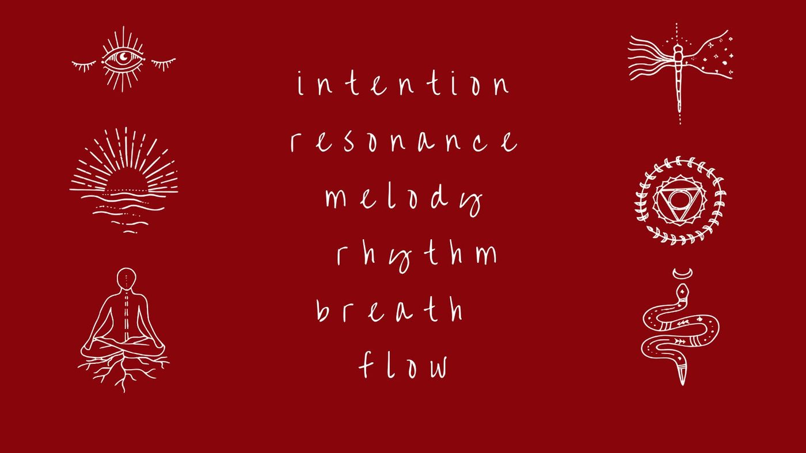

DJ Mantra
Marko Boško · Zagreb · Auroville
Od Gangesa do Amazone. Set je putovanje, ne popis pjesama.
Marko Boško · Zagreb · Auroville
Od Gangesa do Amazone. Set je putovanje, ne popis pjesama.
Perkusionist, tonac i DJ. Dvadeset sedam godina u zvuku, sedam od njih u Aurovilleu u južnoj Indiji.
Osnivač sam Tribal Jam Orchestre, world music ansambla iz Zagreba rođenog 21. prosinca 2011. Afričke i arapske udaraljke, indijanske flaute, didgeridoo, hang i gongovi, ono što zovemo plemenskim jazzom.
Ansambl je nastao iz jedne ideje: skupina ljudi koja nikad nije svirala zajedno može se uskladiti u jedan puls unutar nekoliko minuta, ako se ritam uči kroz tijelo, a ne kroz note.


Sedam godina živio sam u Aurovilleu, međunarodnoj zajednici u južnoj Indiji nadahnutoj vizijom Sri Aurobinda. Ondje sam snimao zvučne vrtove i ručno izrađene instrumente, i počeo proučavati zvuk kao terapijsku modalnost, ne kao metaforu nego kao praksu.
Iz tog razdoblja nastala je Sun Moon Yoga metoda. Spaja sunce Vinyase s mjesecom Hatha yoge. Tijelo se budi kroz pokret, um se smiruje kroz dah, duša pronalazi prostor tišine.
Praksa počinje toplo i polako, otvara kukove i kralježnicu, pa se diže u tok koji grije. Zatim se spušta u duže zadržane položaje gdje disanje preuzima vodstvo. Nema ogledala i nema natjecanja. Tko dolazi prvi put, prati vlastiti tempo.
Ne tražim cijelu večer. Ovo su dijelovi koje mogu voditi, svaki stoji sam za sebe. Vi odlučite što vam treba i gdje me staviti u program.
Zagrijavanje kroz Sun Moon Yogu, sunce Vinyase i mjesec Hathe. Uz to pranayame: kapalabhati za buđenje, bhastrika za vatru, nadi shodhana za smirivanje i balans.
Vođenje prema svjetlu u srcu i svjetlu u glavi, uz sanskrtske mantre. Kratko, jednostavno, bez potrebe za iskustvom.
Zajedničko pjevanje vokala koje otvara energetske kanale i povezuje s pet elemenata. Glas kao alat, ne kao nastup. Nitko ne mora znati pjevati.
World organic house i etno elektronika. Gradim luk iz duboke uzemljenosti prema vrhuncu pa meko natrag u tišinu. Mogu pokriti cijeli ples ili samo jedan dio.
Perkusije uživo, same ili preko seta. Okvirni bubanj, djembe, darbuka, shakeri. Mogu i voditi ritmičku radionicu prije plesa.
Gongovi, zdjele, okvirni bubanj i glas. Ležeći, bez zadatka. Ono što je ples otvorio, zvuk slegne i zatvori.
Toniranje nije pjevanje. Držimo jedan vokal i puštamo ga da vibrira u tijelu. Svaki vokal ima svoje mjesto, svoju kvalitetu i svoj element. Slova nisu slučajna.
Početak, tlo na kojem stojimo. Otvoren zvuk, otvorena usta, težina koja pada u stopala.
U je oblik čaše koja drži vodu, a voda je ono što stvara. Zvuk se skuplja i produbljuje.
Zvuk se projicira prema van. Vatrom idemo kroz život i postižemo ono što želimo postići.
Krug. Nema početka ni kraja, svi smo jedno. Zvuk se širi u prsima i dalje u prostor.
Spajamo sva četiri vokala u jedan neprekinuti zvuk. Iz toga se rađaju alikvoti, viši tonovi iznad tona. Grlo, iskrenost, ono što stvarno imamo za reći.
Zvuk koji sadrži sve prethodne. Pažnja se penje iza očiju i smiruje.
Na kraju ne pjevamo. Sjedimo u onome što je ostalo i osjećamo da je sve povezano sa svime.
Rhythms for Evolution je moja praksa u kojoj se spajaju bubnjevi, pokret, glas, svjesni ples i DJ setovi. Istražujemo drevni puls koji nas sve povezuje.
Sve se okreće. Sve se razvija. Namjera, rezonancija, melodija, ritam, dah, tok. Tim redom i uvijek iznova.



Učio sam kod perkusionističkih majstora u Hrvatskoj, Sloveniji i Izraelu, te kod gostujućih zapadnoafričkih virtuoza. Danas studiram okvirni bubanj kod Yshaija Aftermana, jednog od vodećih svjetskih svirača i učitelja frame druma.
Uz to radim i kao tonac i montažer, pa znam kako zvuk putuje prostorom i što tehnička ekipa treba iz DJ pulta. Stajao sam s obje strane.

Ritam nije nešto što se nauči. Ritam je nešto čega se sjetiš.
Marko Boško · Mantreshwar


Dostupan sam za ecstatic dance večeri, zvučne kupke, radionice ritma i yoga jutra. Baza mi je Zagreb, spreman sam na put.